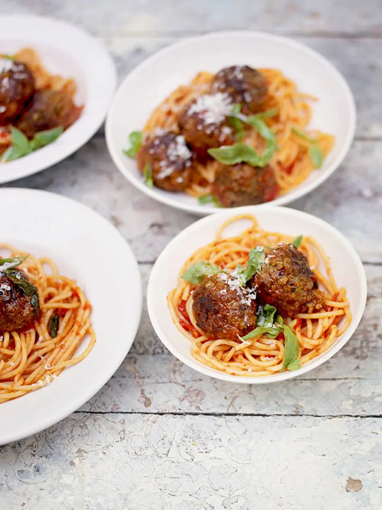

Description
"This really easy beef and pork meatball recipe with simple tomato sauce delivers big on flavour -
simple, wholesome dinner for the whole family. ”
Ingridients
- 12 Jacob's cream crackers
- 4 sprigs of fresh rosemary
- 2 heaped teaspoons Dijon mustard
- 500 g quality minced beef, pork, or a mixture of the two
- 1 heaped tablespoon dried oregano
- 1 large free-range egg
- olive oil
- 1 bunch of fresh basil
- 1 medium onion